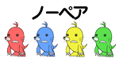

● 画面の見かた
・ バトル画面（4人対戦の場合）
・ パネル
● ルール
モグラをたたくと、自分のパネルにたたいたモグラがストックされます。4匹ストックされたときの色の組み合わせで役が決まり、役に応じて相手の体力ゲージを減らします。体力ゲージが全てなくなったプレイヤーから抜けていき、最後まで残るか、タイムアップ時に体力ゲージが一番多く残っていたプレイヤーの勝ちです。
・ ゲームセット
全員の順位が確定するか、制限時間が0になると、ゲームセットになります。CPUのみが残った場合も、その時点でゲームセットになります。
・ 役リスト
|
同じ色のモグラが2匹いる役です。 |
小ダメージ |
|
同じ色のモグラが2匹ずつ2組いる役です。 |
中ダメージ |
|
同じ色のモグラが3匹いる役です。 |
大ダメージ |
|
同じ色のモグラが4匹いる役です。 |
特大
ダメージ |
|  |
4匹全て違う色の役です。 |
体力が
少し回復 |
・ モグラの色と追加ダメージ
モグラの色は全部で6色あります。相手のハンマーの色と同じ色のモグラを揃えると、そのプレイヤーへ与えるダメージが通常よりも大きくなります。


・ レインボーモグラ
レインボーモグラは、4匹ストックされたときに一番強い役になるように色が変わります。
・ アイテムボックス
アイテムボックスをたたくと、以下のどれかの効果が発生します。
ゲージ回復
|
アイテムボックスをたたいたプレイヤーの体力ゲージが少し回復します。 |
モグラ逃走
 |
全員の集めていたモグラが逃げていなくなります。 |
ビッグハンマー

|
アイテムボックスをたたいたプレイヤーのハンマーが大きくなり、通常のハンマーよりもモグラをたたきやすくなります。 |

・ バクダン
バクダンをたたいてしまったプレイヤーは、一定時間モグラをたたくことができません。
● アドバイス
次に出るモグラの表示を見て、作戦を立てることができます。役が作りやすそうなモグラを狙ったり、相手が作っている役を妨害するのもいいでしょう。